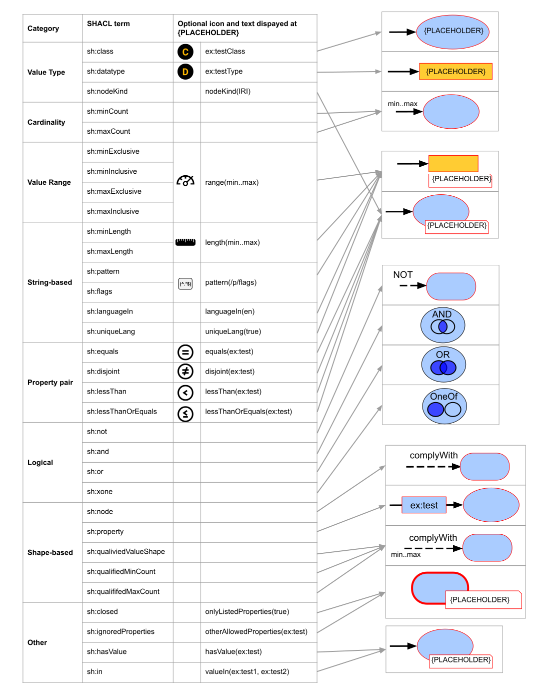
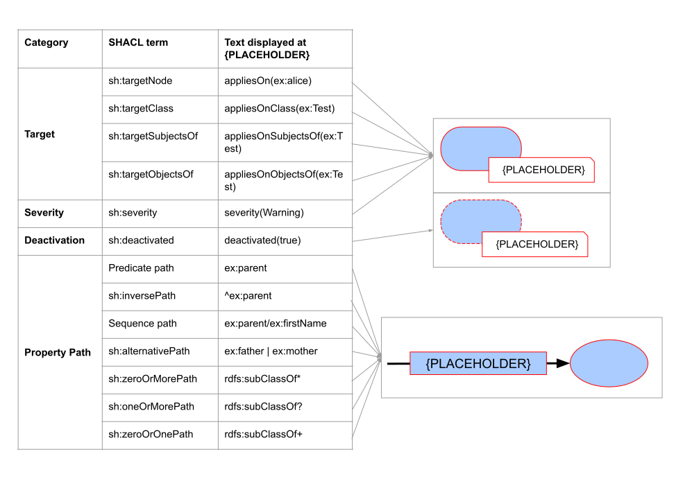
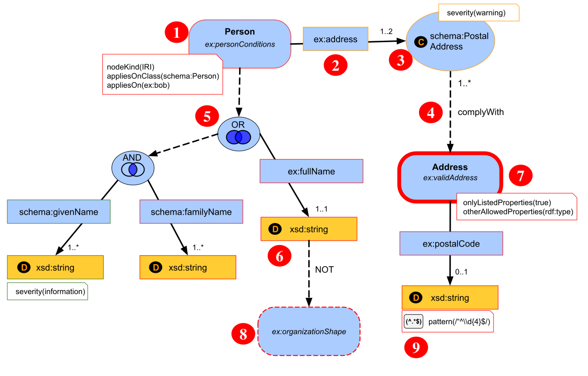

This document defines ShapeVOWL, a visual notation for RDF constraints.
It specifies the visualization primitives to represent constraints to users.
This document is the result of ongoing research.
1. Introduction
Knowledge Graphs defined with the Resource Description Framework [RDF] consist of vocabulary terms and instance data both described using the graph model of RDF.
Several constraint languages exist to define conditions on such RDF graphs, one such language is the W3C recommended Shapes Constraint Language [SHACL]
which itself is represented using RDF.
Users rely on different types of constraints offered by constraint languages to define conditions on RDF graphs.
RDF follows a graph model which intuitively can be represented using nodes and edges.
The Visual Notation for OWL Ontologies [VOWL] leverages this graph model to visualize ontologies, the vocabulary of terms of Knowledge Graphs.
Besides this, VOWL-based visual notations were also used for the RDF Query Language SPARQL [QueryVOWL], used to query RDF data, and
for the RDF Mapping Language (RML) [MapVOWL], used to transform structured data to RDF.
ShapeVOWL is an attempt to leverage the broadly used visual notation VOWL for RDF constraints.
2. Terminology
Throughout the document, the following terminology is used.
2.1 General
(anonymous) entity
An entity is something that exists as a distinct, independent, or self-contained unit.
Examples are people, companies, buildings and so on.
If you want to uniquely address an entity then it needs to have a unique name.
Therefore, entities use HTTP URIs.
However, when a entity does not have a URI we call it an anonymous entity [MapVOWL].
attribute
More information is provided about an entity by adding attribute to it.
Examples are the name of a person, the VAT number of a company and so on [MapVOWL].
relationship
An entity and its attributes are connected with each other using relationships.
A relationship describes how a attribute relates to its entity [MapVOWL].
constraints
A constraint is a condition on data which should be satisfied. Several types of constraints exist,
e.g. a datatype constraint on a property restricts the value of that property to be of a specific datatype
and a cardinality constraint on a property restricts the number of that property [SHACL-core-constraints].
data shape
A data shape is a set of conditions on RDF data [SHACL-abstract].
It provides context for constraints, i.e. a datatype constraint can be used
in different data shapes which corresponds to different contexts.
node shape
A node shape is a specific data shape which represents conditions on nodes,
i.e. subjects and objects of triples [SHACL].
property shape
A property shape is a specific data shape which represents conditions on properties and their values,
i.e. predicates and related objects of triples [SHACL].
closed data shape
A closed data shape may only have values for the properties explicitly enumerated via property shapes [SHACL].
severity
Each data shape has a severity which qualifies the violation of the stated conditions, i.e. it categorizes validation results [SHACL].
By default a data shape has the severity "violation" but other severities can be defined,
i.e. the SHACL core specifies the three severities "violation", "warning" and "information".
2.2 Visualization
node
A node is a visual representation of either an entity or an attribute [MapVOWL].
edge
An edge is a line connecting two nodes.
It represents the relationship between two entities or one entity and one attribute [MapVOWL].
graph
A graph is a collection of nodes and edges [MapVOWL].
3. Graphical Primitives
Name
Primitive
Description
rectangle with round corners
node shape
circle
value of a property shape
rectangle
relationship label
literal
solid line
relationship between a node and a property shape
dashed line
relationship between nodes and data shapes or property shapes and node shapes (not between node shapes and property shapes)
border of deactivated data shapes
arrowhead
relationship direction
text
text
labels, constraints and other textual information
4. Colors
4.1 General
Abstract Color Name
Concrete Color Recommendation
Description
Application
canvas
#ffffff
white
Bright color with a good contrast to all other colors.
canvas where are all other graph elements are shown on
foreground
#000000
black
Very dark color with a good contrast to all other colors.
border of elements and edges
base color
#aaccff
VOWL blue
We reuse the color 'general' of VOWL.
standard fill color of data shapes
datatype color
#ffcc33
VOWL yellow
We reuse the color 'datatype' of VOWL.
standard fill color of literals
highlight
see next table
For each data shape the highlight color is a darker shade of the
base color of that element.
fill color of the graph elements when selected
severity
see next table
Every severity has its own color.
border color of the data shape based on its severity; default severity is violation
4.2 Color Schemas
Color Schema Name
Base Color
Highlight
base color
#aaccff
#1155cc
severity violation
#e06666
#b7b7b7
severity warning (light yellow different from datatype color)
#ffd966
#bf9000
severity information
#93c47d
#b7b7b7
5. Constraints
First, we provide a mapping from semantic constructs of RDF constraint languages
to visual elements of ShapeVOWL (see figures).
Next, we explain splitting rules with respect to the visualization of property shapes.
Finally, we provide a complete visual example.
5.1 Semantic constructs
The SHACL specification [SHACL] contains core constraints and other concepts relevant for data validation.
We provide a mapping of semantic constructs to visual representations with ShapeVOWL,
i.e. in the first figure we provide the mapping from SHACL core constraints
and in the second figure we provide the mapping from other relevant SHACL concepts.

Figure 1
Semantic constructs of SHACL core constraints
and their visual representation in ShapeVOWL.

Figure 2
Semantic constructs of validation-related SHACL concepts
and their visual representation in ShapeVOWL.
5.2 Splitting rules
Node shapes can be reused by a directed dashed connection, however we recommend splitting rules for the visualization of reused property shapes as trade-off for the graph rendering.
Different splittings for property shapes are possible; in the following we describe three possible splitting rules for property shapes.
Depending on the level of detail, applications may choose one of the splitting rules.
Property shapes consist of two parts: a solid directed edge with the property path as label in a rectangle and a value the directed edge points too which is either a node or a literal.
5.2.1 Duplicate property shape
A reused property shape is visualized for each reuse, i.e. a property shape which is used n times will be visualized n times.
5.2.2 Duplicate property path
The value of a reused property shape is visualized only once but the directed edge and label are visualized for each reuse.
5.2.3 No duplication
A reused property shape is visualized only once, i.e. a property shape which is used n times will be visualized exactly one time
and will have n ingoing solid edges to the rectangle containing the property path.
5.3 Example
Below you can find an example for constraints expressed with ShapeVOWL.

Figure 3
Constraints visualized using ShapeVOWL: A subject valid to the Person data shape should have an IRI (1),
at least one but maximum two ex:address properties (2) of class schema:PostalAddress (3)
and the object of at least one ex:address property should comply with the existing data shape ex:validAddress (4).
Additionally, the subject valid to person should either have exactly one ex:fullName or at least one schema:givenName (5)
and at least one schema:familyName all of datatype xsd:string.
The value of ex:fullName must not comply with the data shape ex:organizationShape (6).
Addresses must only have values for the property postalAddress with an exception for rdf:type (7).
Constraints of the ex:organizationShape are not considered for validation (8).
ShapeVOWL also visualizes optional accompanying logos for constraint types (9).